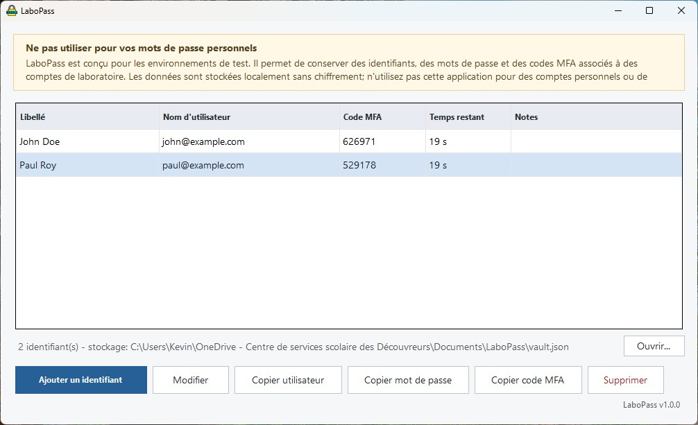
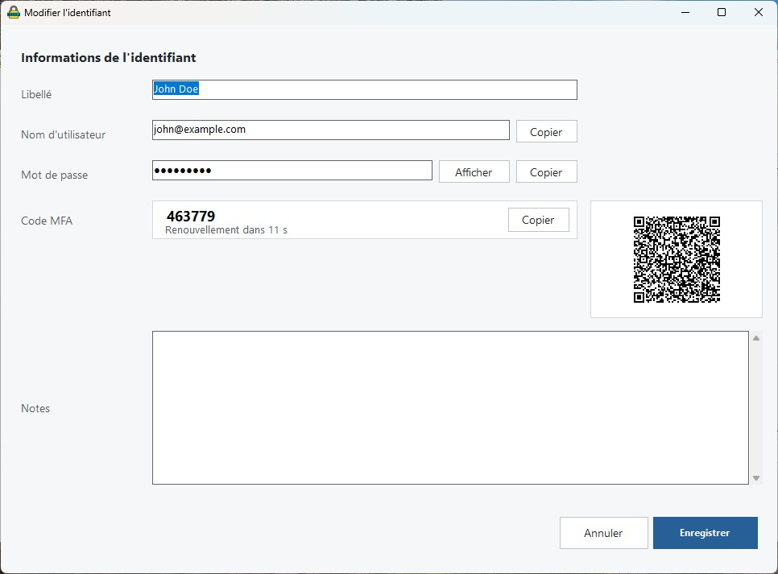

LaboPass
Un petit outil Windows pour conserver des identifiants de laboratoire, des mots de passe de test et des codes MFA/TOTP au même endroit.

À savoir avant de commencer
LaboPass est conçu pour les environnements de test. Les données sont enregistrées localement sans chiffrement. Ne l’utilisez pas pour des comptes personnels, réels ou de production.
Démarrer rapidement
-
Téléchargez l’application.
Cliquez sur le bouton de téléchargement, puis gardez le fichierLaboPass.exedans un dossier facile à retrouver. -
Ouvrez LaboPass.
Double-cliquez surLaboPass.exe. Le fichier de donnéesvault.jsonsera créé automatiquement dans le même dossier. Si Windows refuse de lancer l’application après le téléchargement, faites un clic droit surLaboPass.exe, choisissez Propriétés, cochez Débloquer, puis cliquez sur OK. -
Ajoutez un identifiant.
Cliquez sur Ajouter un identifiant, puis inscrivez un libellé, un nom d’utilisateur et un mot de passe. -
Importez le QR MFA au besoin.
Si un service affiche un code QR pour l’authentification MFA, copiez l’image du QR, puis utilisez le bouton d’import dans LaboPass.
Ce que vous voyez dans la fenêtre principale
Les boutons du bas servent à ajouter, modifier, copier ou supprimer une entrée sélectionnée.
Ajouter ou modifier une entrée

Le mot de passe est masqué par défaut. Le code MFA se rafraîchit automatiquement lorsque l’entrée contient un QR TOTP valide.
Copier une information
Sélectionnez une entrée, puis utilisez les boutons Copier utilisateur, Copier mot de passe ou Copier code MFA. Vous pouvez aussi faire un clic droit sur la liste pour afficher les mêmes actions.
Modifier ou supprimer le QR TOTP
Dans la fenêtre d’un identifiant, cliquez sur l’image du QR. Vous pourrez voir le QR en plus grand, modifier l’URI TOTP ou supprimer le QR associé à l’entrée.
Où sont enregistrées les données?
Par défaut, LaboPass utilise un fichier nommé vault.json, placé
dans le même dossier que LaboPass.exe. C’est ce fichier qui contient
les identifiants, les mots de passe, les notes et les informations TOTP.
Si votre enseignant vous donne un autre fichier JSON, utilisez le bouton Ouvrir... dans le bas de l’application pour le charger.
Conseils simples
LaboPass.exe et vault.json dans le même dossier.